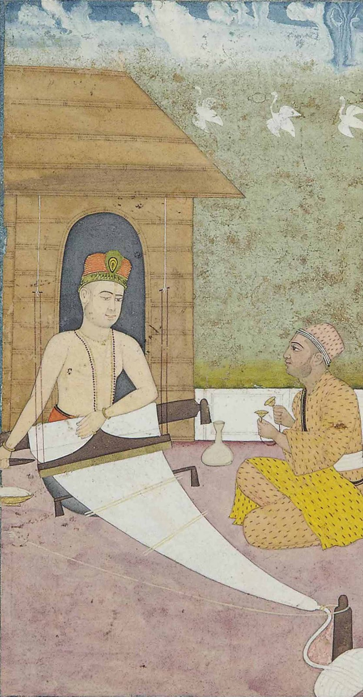
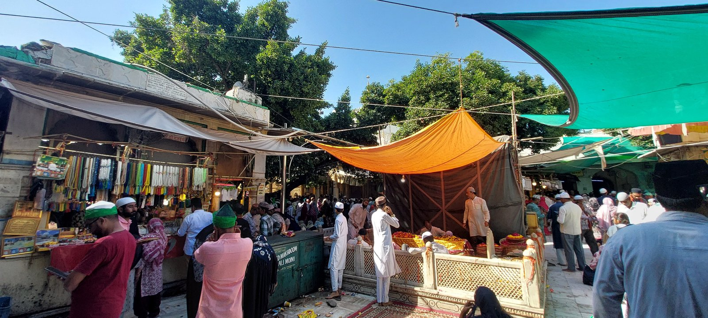

Image Title
Zoom with wheel • Drag to pan • Click reset
100%
Medieval Indian History • Module 13: Bhakti & Sufi Movements
In medieval India, a profound socio-religious transformation surged across the subcontinent. Rejecting priestly ritualism, orthodox dogma, and rigid caste stratifications, Bhakti and Sufi saints championed direct communion with God through devotional love (Prema / Ishq), vernacular poetry, musical ecstasy, and the sublime fraternity of all humankind.

Varanasi mystic whose Bijak and Sakhi bridged Hindus and Muslims through simple love for the Formless Supreme.
The Great Acharyas & Their Darshanas
Bhakti originated in Tamil country under the Alvars (12 Vaishnava saints) and Nayanars (63 Shaivite saints). In the 11th century, it was revived philosophically by the Acharyas to provide intellectual ballast against Buddhist and Jain dominance.
Advaita (Non-Dualism / Monism)
Vishishtadvaita (Qualified Monism)
Dvaita (Absolute Dualism)
Dvaitadvaita (Dualistic Non-Dualism / Bhedabheda)
Shuddhadvaita (Pure Non-Dualism) & Pushti Marg
Bridge from South to North India
| Philosophical School | Founder / Acharya | Deity & Focus | Concept of Soul (Jiva) & God (Brahman) |
|---|---|---|---|
| Advaita | Adi Shankaracharya | Nirguna Brahman | Absolute identity (Aham Brahmasmi); world is Maya. |
| Vishishtadvaita | Ramanujacharya | Saguna Narayana (Vishnu) | Soul is an organic attribute/body of Brahman; surrender (Prapatti). |
| Dvaita | Madhvacharya | Lord Vishnu | Eternal distinctness between soul and God; Pancha-Bheda. |
| Dvaitadvaita / Bhedabheda | Nimbarkacharya | Radha-Krishna | Simultaneously different yet non-different like rays of the sun. |
| Shuddhadvaita | Vallabhacharya | Krishna (Shri Nathji) | Pure non-dualism without Maya; Pushti Marg (Divine Grace). |
Nirguna & Saguna Saint-Poets
Bhakti split into two principal devotional expressions: worship of the formless God without attributes (Nirguna) and worship of divine personal manifestations and avatars (Saguna).
Formless, Omnipresent Supreme Reality
The most radical disciple of Ramananda. Strongly condemned empty rituals, idol worship, caste arrogance, untouchability, and fanaticism in both Hinduism and Islam. Taught that Ram and Rahim are manifestations of the one supreme reality.
First Sikh Guru and founder of Sikhism. Emphasized Ek Onkar (One Supreme God), complete equality of gender and caste. Inaugurated communal kitchen (Langar / Pangat) and holy congregation (Sangat).
Nirguna saint belonging to the tanner/cotton-carder caste. Spent his life at Naraina (Rajasthan). Founded the Dadu Panth and established Nipakh (non-sectarian) path of devotion. Akbar invited him to the Ibadat Khana at Fatehpur Sikri.
Personal Avatars: Krishna & Rama
Paramount exponent of Krishna Bhakti in Bengal and founder of Gaudiya Vaishnavism. Popularized Sankirtan (congregational singing of the Hare Krishna Mahamantra) and ecstatic dance. Philosophy known as Achintya Bhedabheda.
Rathor princess of Merta and daughter-in-law of Rana Sanga of Mewar (married to Prince Bhojraj). Considered Lord Krishna (Girdhar Gopal) as her eternal spouse. Composed soul-stirring devotional bhajans in Rajasthani and Braj.
Blind poet of Agra, disciple of Vallabhacharya. Sang Krishna's childhood leelas in Braj. Author of Sursagar & Sur Saravali.
Greatest poet of Rama Bhakti. Authored Ramcharitmanas (Awadhi), Kavitawali, Gitawali, & Vinaya Patrika.
Foremost Haridasa of Karnataka. Laid foundations of modern Carnatic music; revered as Carnatic Sangeeta Pitamaha.
Part of Carnatic Trinity in Thanjavur (Tamil Nadu). Composed devotional Kritis dedicating every breath to Rama in Telugu.
Maharashtra Dharma & The Varkari Movement
Centered around the beloved temple of Lord Vithoba (Vitthala) at Pandharpur on the banks of the Chandrabhaga river, this movement provided spiritual cohesion that later fueled Shivaji's Swarajya.
Fountain-head of Marathi Bhakti
Authored Bhavartha Dipika (popularly known as Jnaneshwari), a pioneering Marathi verse commentary on the Bhagavad Gita at age 15. Also composed the philosophical treatise Amrutanubhav.
Founder of Varkari Sect
A tailor by caste, disciple of Visoba Khechar. Staunchly opposed caste barriers. Established the biannual pilgrimage (Vari) to Pandharpur. 61 of his devotional abhangas are incorporated into the Sikh holy scripture Guru Granth Sahib.
Scholar-Saint of Paithan
Synthesized scholarship with grassroots accessibility. Wrote the Bhavartha Ramayana and a celebrated commentary on the 11th Skandha of Bhagavata Purana (Eknathi Bhagavata). Innovated folk-style devotional songs called Bharuds.
Greatest Bhakti Poet of Deccan
Shudra grain-trader from Dehu. Composed thousands of immortal devotional poems called Abhangas. Contemporary of Chhatrapati Shivaji Maharaj, whom he inspired with high moral ethics and spiritual egalitarianism.
Spiritual Guru of Shivaji
Founder of the Dharkari sect, emphasizing practical activism, duty, and physical strength along with spiritual devotion. His monumental compilation of writings and sermons is titled Dasbodha. Installed Hanuman temples across Maharashtra.
The Sufi Movement & The Silsilas
Sufism emphasized inner mystical experience, direct perception of God through love (Ishq), spiritual music (Sama), and self-abnegation (Fana), transcending formal theological barriers.

Spiritual epicenter of the liberal Chishti tradition in India since 1206 AD.
Founded in India by Khwaja Muinuddin Chishti (Ajmer). Chishtis maintained austere poverty, rejected state appointments/patronage, and actively practiced Sama (musical audition).
Founded in India by Shaikh Bahauddin Zakariya (1182–1262). Unlike the Chishtis, they did not believe in extreme asceticism or total poverty. They accepted state gifts, held government offices (Shaikh-ul-Islam), and accumulated wealth while engaging in charitable statecraft.
Introduced in India by Shah Niamatullah & Nasiruddin Muhammad Jilani (15th c.).
Famous saint Mian Mir of Lahore laid the foundation stone of the Golden Temple (Harmandir Sahib) in Amritsar. Prince Dara Shikoh was an ardent follower.
Founded in India by Khwaja Baqi Billah (1563–1603).
Most orthodox order. Led by Sheikh Ahmad Sirhindi (Mujaddid Alif Sani), who fiercely opposed Akbar's syncretic Din-i-Ilahi and advocated strict adherence to Shariat.
| Sufi Term | Literal Meaning | Significance in Medieval Practice |
|---|---|---|
| Pir / Murshid / Shaikh | Spiritual Preceptor / Guide | The master who guides the seeker along the spiritual stages (Maqamat) toward divine truth. |
| Murid | Disciple / Seeker | Initiate who pledges total allegiance and obedience to the Pir. |
| Khalifah | Spiritual Successor | Deputy appointed by the Pir to perpetuate the Silsila and lead disciples in a region. |
| Khanqah / Jama'at Khana | Hospice / Monastery | Center of community living, spiritual instruction, community meals, and free shelter for travellers. |
| Sama | Musical Gathering | Spiritual audition of Qawwali music used by Chishtis to induce ecstatic divine consciousness (Hal). |
| Raks | Spiritual Dance | Ecstatic movement performed during musical recitation of God's praise. |
| Fana | Self-Annihilation | Dissolution of the mortal human ego into the infinite presence of God. |
| Ziyarat | Pilgrimage | Pious visit to the tombs (Dargahs) of Sufi saints on death anniversaries (Urs) to seek blessings. |
Interactive Recall & Examination Drill
Cement high-yield prelims facts on Bhakti philosophies, saint-poets, texts, and Sufi orders.
Loading question...
Loading answer...
5 High-Probability Questions for UPSC, APSC & State PSCs